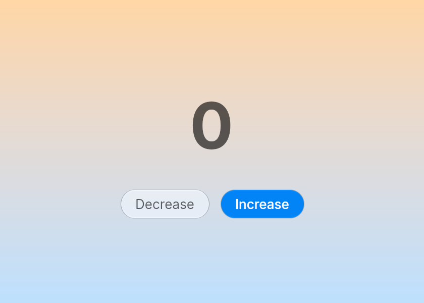
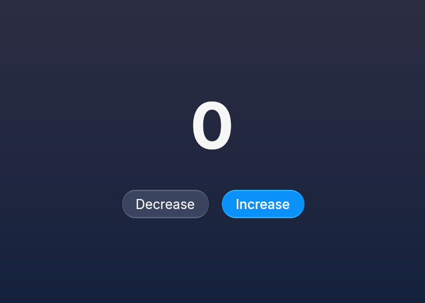

Getting started
Embun is a Rust UI toolkit with glass controls that match macOS 27. You describe the UI as a tree of elements, Embun lays it out and draws it with wgpu, and your app gets a message when the user presses something.
Install
cargo add embunEmbun draws with wgpu, so it needs Metal (macOS), Vulkan, DirectX 12 or OpenGL. The tests run on macOS with Metal and on Linux with Vulkan and OpenGL. Windows is untested.
Your first app
An app is a struct, a message type and two functions. update changes the struct when a message arrives. view returns the elements for the current state. This one is a counter with two buttons.


use embun::*;
pub struct Counter {
pub count: i32,
}
#[derive(Clone)]
pub enum Message {
Increment,
Decrement,
}
impl App for Counter {
type Message = Message;
fn update(&mut self, message: Message) {
match message {
Message::Increment => self.count += 1,
Message::Decrement => self.count -= 1,
}
}
fn view(&self, theme: &Theme) -> Element<Message> {
column()
.items_center()
.justify_center()
.gap_6()
.bg_gradient(theme.pick(Color::hex(0xffd6a5), Color::hex(0x2b2d42)), theme.pick(Color::hex(0xbde0fe), Color::hex(0x14213d)))
.child(text(self.count.to_string()).text_size(64.0).font_bold())
.child(
row()
.gap_3()
.child(button("Decrease").size(ControlSize::Large).on_press(Message::Decrement))
.child(button("Increase").size(ControlSize::Large).prominent().on_press(Message::Increment)),
)
}
}Run it with a window:
fn main() -> Result<(), RunError> {
run(Counter { count: 0 }, Settings::new("Counter").size(420.0, 300.0))
}How a press becomes a change
- The user presses Increase. Embun finds the element under the pointer and takes the message you gave to
on_press. - Embun calls
update(Message::Increment). You changeself.count. - Embun calls
viewagain, lays out the new tree and draws it.
Your app owns all the state. Controls such as switch, slider and text_input take their value from you and send a message when it should change.
Styling
Elements are styled with methods named after Tailwind classes: gap_3, p_5, rounded_full, items_center. Colors come from the Theme that view receives, so your UI follows light and dark mode.
Where to go next
- Layout and styling: rows, columns, sizes, surfaces and gradients.
- Text and images: sizes, weights, wrapping and image loading.
- Buttons and toolbars: the glass controls.
- Controls: switches, checkboxes, radio buttons, sliders and segmented controls.
- Text fields, lists, menus and dialogs, and theme and accessibility.
- The examples folder has a photo library, a notes app and a list of a million rows.